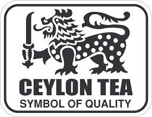

Ceylon (say-lawn) tea could be a tea delivered on the island country of Sri Lanka, once known as Ceylon. Sri Lanka is little, but it has an colossal run in rise, climate, soil sort, plant varietals, and climate, so the flavors and character of the teas created there shift greatly. Despite the territorial subtleties, classic Ceylon flavor is by and large thought to be striking, full, and brisk. It has medium-to-full tannins and a few notes of citrus, chocolate, or spice. Ceylon teas are made from the dried takes off of the tea plant, Camellia sinensis. The takes off are regularly depicted as wiry since they are cleared out long and thin with a wirelike see. Within the world of tea, these takes off are exceptionally simple to recognize. Most Ceylon tea is standard tea, meaning it was prepared by hand, making a brisk, shinning tea.
5 Health Benefits of Ceylon Tea:
Ceylon tea is known to have a long list of health benefits. Some major benefits include:
Weight Loss -
Drinking tea boosts your digestion system, which may offer assistance increment vitality and offer assistance your body burn fat.
Immune System -
Ceylon tea is wealthy in cancer prevention agents, which may increment white blood cells, boost the resistant framework, and offer assistance the body fight disease-causing infections and hurtful microbes.
Heart Health -
Ponders have appeared that utilization of dark tea may offer assistance diminish blood pressure.1 Ceylon tea contains potassium, which unwinds the pressure in your blood vessels and supply routes.
Diabetes -
Drinking Ceylon tea has been appeared to diminish blood glucose levels. By making a difference to direct the glucose and affront levels within the body, Ceylon tea may offer assistance avoid the spikes and drops that can be perilous for individuals with diabetes.
Skin - Collagen is critical for skin versatility. A few of the cancer prevention agents that have been recognized in Ceylon tea are connected to lessening collagen misfortune within the skin by avoiding oxidative push in the encompassing cells.
Is ceylon Tea good?
Aside from being wealthy in cancer prevention agents, Ceylon tea is additionally connected to health benefits like made strides heart wellbeing and blood sugar control, as well as weight loss. It's too simple to form at domestic and encompasses a special, one-of-a-kind taste that sets it separated from other teas.
Is ceylon Tea Expensive??
Green tea is the moment most well known sort of Ceylon tea. Once culled from the same Camellia Sinensis bush, the clears out are shriveled, warmed and after that rolled, some time recently being dried and sifted.White tea may be a special and elite sort of Ceylon tea and very conceivably the foremost costly due to its irregularity.
Is ceylon Tea high in caffeine?
How much caffeine is in Ceylon tea? Ceylon tea contains the same run of 30-90 mg of caffeine. Be that as it may this may shift depending on what sort of tea you purchase. White tea and green tea for occurrence would have marginally higher levels of caffeine compared with dark tea.

SYMBOL OF QUALITY The Logo is owned by the Sri Lanka Tea Board and globally trademarked.
Lion Logo on your pack of tea is a
gurantee for 100% Pure Ceylon Tea packed in Sri Lanka. To ensure what you buy is Ceylon
Tea, look for the Lion Logo.
The Sri Lankan Tea industry keeps up the most noteworthy quality within the world advertise and ISO 3720 is the least standard connected for the products. The Nation has the capability to produce the cleanest tea within the world in terms of least pesticides and buildups.
Russian League, Turkey, the Center East, Europe, African Locale, Joined together states, Japan, Australia and China are recorded as the most goals for Ceylon tea. The Russian League, being the number one single nation goal for Ceylon Tea, accounts for 14% (US$ 228.3 Mn) of Sri Lankan Tea exports.